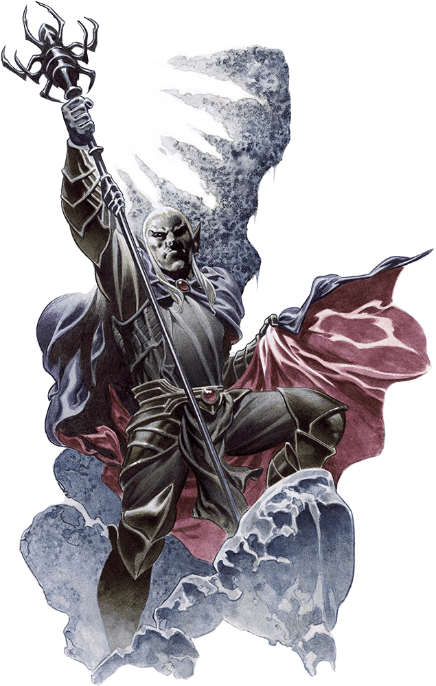

Tenth Session
Death and Spiders
Summerday +360 hours
Dramatis Personae
- Benjamin, a 5th-level Wood Elf Ranger
- Calmul Rhoqiroth, a 5th-level Dragonborn Artificer
- CoralKing, a 5th-level Gnome Monk
- Geral Bryn, a 5th-level Human Fighter
- Orky, a 5th-level Half-Elf Paladin
- Steve, a 5th-level Halfling Rogue
- Tasbros, a 5th-level Sky Elf Sorcerer
- Tysnera, a 5th-level Sky Elf Wizard
- Viker, a 5th-level Eladrin Druid
- Wulrif, a 5th-level Human Warlock
From the journal of Dame Orky
We are still in the cave. Steve saw there were some things embedded in the ooze we just exploded. He investigates and finds 20 gp. The whole cave seems magical and there’s a strange draft. There also sounds like a surf sounds, crashing every 2-3 minutes, to the North/Northeast. Tasbros declares his desire to chase the magic. We all decide to head North – toward some stairs. We ask Steve to check for traps:
- His vision blurs for a bit (rolls a 2) and cannot see any traps.
- Wulrif investigates the stairs. The stairs seem solid and well-designed.
- Steve uses Luck
- Tysnera doesn’t find anything other than the stairs seem to be made for Dwarves
We head down the stairs and find ourselves in a large cavern with some ledges, tables, and dozens of warrior skeletons. It looks like a battle occurred here a long time ago, but they smell. Some gray ghoulish creatures start to rise and approach us. They don’t lurch, but move quicker.
Round 1
- Wulrif Hexes the first creature and does 13 damage (AC 13)
- Benjamin detect their weaknesses. They are immune to poison & charm. Resistance to necrotic damage. Resistance to being turned. Tougher ones are Ghasts and easier ones are Ghouls.
- Tasbros casts scorching ray (2nd level) on 3 fresh Ghasts and uses meta magic. He hits them each for 13 damage.
- Geral tells Benjamin to fire his bow! He hits a damaged Ghast that Wulrif hit for 15 damage. Geral hits it again with his bow and does 8 damage, killing it!
- CoralKing is at the back of the pack. He moves forward through us and throws 2 darts for 15 damage.
- Viker uses frostbite and does 5 damage.
- Calmul moves into the room to shoot and hits a critical shot! That means 16 damage to a damaged Ghast. That one is killed.
- The Ghasts attack now: a. The Ghasts move forward to attack Calmul, Orky, Geral, and CoralKing. b. They miss Calmul, Orky, and Geral. c. They critically hit CoralKing and Geral claims protection. They miss! d. We all have to make a constitution saving throw. Orky got poisoned, which gives her disadvantage on her attacks.
- Tysnera casts Fireball and hits every creature with 36 HP damage. They are all killed!
CoralKing picks up all of his darts while we move through the room, east into the next room. There are more skeletons, but nothing moving. Geral decides, after a heated debate between Tasbros and Tysnera, to backtrack and enter the room south of here. This room is full of bunks and there are bones of Orcs and Dwarves, that are being gnawed on by Ghasts and Ghouls. When they see us enter, they attack.
Round 1
- Tysnera holds her action
- Calmul hits a Ghast for 19 damage.
- Steve hides behind someone and sneak attacks the damaged Ghast, killing it.
- Orky moves and attacks a Ghast twice, killing it.
- CoralKing hits a Ghoul and uses three unarmed attacks and one hit for 6 damage.
- Geral hits the damaged Ghoul for 22 damage, killing it.
- Viker casts ice knife and hits a Ghoul for 10? Damage.
- Now the Undead fight back: a. They all surround Orky and hit her twice for 20 damage.
- Tasbros casts Firebolt on a Ghast and does 7 damage to it.
- Benjamin moves forward to attack the Ghast and does 19 damage, killing it!
- Wulrif shoots one Ghoul and kills it.
- Tysnera finally feel prepared to act and hits it for 12 damage.
Round 2
- Calmul shoots the remaining Ghoul and does 13 damage.
- Steve uses a sneak attack and kills it!
Tysnera detects all kinds of magic in this cave. We all take a short rest and decide to take the southern hallway to move east into a room where we find a storeroom full of kegs. We realize it’s a dead end. So, we move west toward the large room we know is full of bugbears.
Wulrif uses mage hand and gust to open the door, but it doesn’t open because it’s barricaded. Benjamin gives it a super hard kick and manages to barely kick it in. We see 10 bugbears and a very large one in the back.
Round 1 - Surprise
- Steve hits the first bugbear and does 14 damage.
- Benjamin hits the same one twice and does 29 damage, bringing it down.
- Viker moves into the room, uses ice knife, misses, and Teleports back out of the room.
- Wulrif marks the big one and throws him into the wall using eldritch ray behind him for 17 damage.
- CoralKing throws 2 darts at the marked bugbear for 12 damage.
- Geral holds his action
- Tasbros casts Fireball and the bugbears make their saving throws. So, they get hit for 14 damage each.
- Tysnera casts Fireball and the bugbears make their saving throws again. So, they all take 16 damage, which drops them all except the big one and the marked one.
- Geral takes his action to ask Benjamin to shoot his bow. He hits the marked one for does 13 damage. Geral hits the same one and drops it.
- Calmul shoots at the bugbear and misses.
- Orky Teleports to the leader, and attacks him twice for 16 total damage.
Round 2
- Steve misses an attack
- Benjamin shoots at the leader and missed the first. He tries again and hits, doing 12 damage, killing it.
Now we hear a voice say “oh, that’s a shame. I guess I have to deal with you now.” Wulrif detects thoughts and gets nothing. We hear: “what brings you here anyway?” Wulrif responds “We are here for some treasure.” And it responds “Well, you should find another place for that. You’ll find nothing but death here. I know what I’m looking for, do you?” We say “What are you looking for?” No response. “We’re here for Gundren’s brother.” The voice says “We have him.”
We all make saving throws + DEX. We need a 16 to make it. A Fireball detonated in the middle of the room. Geral, Viker, Orky, and Tysnera failed, taking 34 damage. Next, we are in the middle of a yellow-green fog. We all have to use a constitution saving throw. Those who roll 15, make it. Geral and Wulrif failed.
We see a Drow and a human run out of room and 4 spiders run into the room. Orky gets an opportunity of attack and delivered 15 damage.
Round 3
- Steve makes a death saving throw and misses.
- Benjamin uses hunter’s mark on the damaged Spider and shoots twice and kills it.
- Viker uses Healing Word and everyone gets healed 5 HP.
- The spiders go now: a. One hit Orky for 4 HP damage, reduced from 7.
- Wulrif blasts a Spider back and does 17 damage.
- CoralKing moves forward to attack the damaged Spider, flanking Orky. He rolls a crit and does 28 damage and kills it! Everyone in the room has to make a saving throw + CON on the start of their turn, if they started in the fog at the beginning of their turn (15 makes it). No one has failed so far.
- Tasbros casts Dispel Magic and rids the room of the poison fog.
- The spiders make a web around Orky, but she managed to fight her way out of it.
- Tysnera uses Magic Missile and does 3 damage to one and 5 to another.
- Calmul ?
- Orky kills the most damaged Spider.
Round 4
- Benjamin uses healing spirit on Viker for 8 HP.
- Viker uses a potion of healing in her backpack, she drinks it and gains HP.
- The giant Spider missed an attack on Orky.
- Wulrif takes a potion out of Calmul’s backpack and gains 6 HP.
- CoralKing hits the Spider 3 times for 20 HP
- Geral asks Orky to hit the Spider and she kills it!
- Tasbros burns the web out of the doorway.
- Tysnera moved forward a little and holds her action.
- Calmul heals Steve for 10 HP. We decide to take some time to heal up. Viker heals Steve for 20 HP. Benjamin heals a lot of people. Viker heals Orky and CoralKing for 7 and 10 HP. And so on…
We ask Steve to sneak around the corner where we saw someone run away. He peaks around and doesn’t see anyone. We follow him in pursuit. We end up following the source of magic and Tysnera notices footsteps. We end up at fully-sealed double doors that we cannot see a way to penetrate. Tasbros remembers that he can cast “Knock” and we blow the door open. We see a Drow and a wizard, Glasstaff.

Round 1
- CoralKing attempts to enter the room and a bunch of tentacles spring up from the floor. a. Wulrif uses a Counter spell and disintegrates them. b. He dashes to the wizard.
- The rest of us make DEX saving throws and those who make it, take 14 damage. We all used various methods to make the throws.
- Steve hits a Drow?
- A Drow sends a flame and CoralKing makes a saving throw and fails. He takes 9 damage.
- Tasbros casts Chromatic Orb on the wizard for 31 damage, killing him.
- Wulrif Eldritch Blasts the Drow onto the star space, doing 19 damage.
- Tysnera uses Magic Missile and they get absorbed into a special spot.
- Viker casts moonbeam and the Drow uses a Counterspell to block it.
- Orky casts Hold Person and the Drow succeeds on it’s wisdom saving throw.
- Benjamin tries to shoot and misses.
- Calmul shoots at it and misses.
- Geral moves in 30 ft and tells Benjamin to shoot. He shoots the Drow for 21 damage. Geral uses his action surge and hits it for 3 damage.
Round 2
- CoralKing hits twice for 13 damage.
- The Drow tries to go invisible and Wulrif counters his spell, so he remains visible.
- Steve hits him and does 20 damage and knocks him down.
- We pause the gameplay here.
The Drow, Nezznar the Black Spider, has Elven Chain Mail and a Staff of the Spider. The human, Sildar's erstwhile friend Iarno Glasstaff, has a Staff of Defense. The Bugbear leader had a Sentinel Shield.